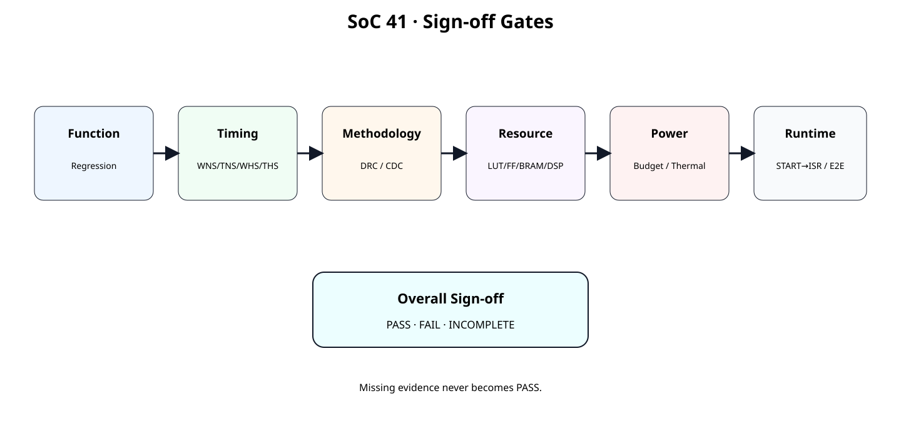
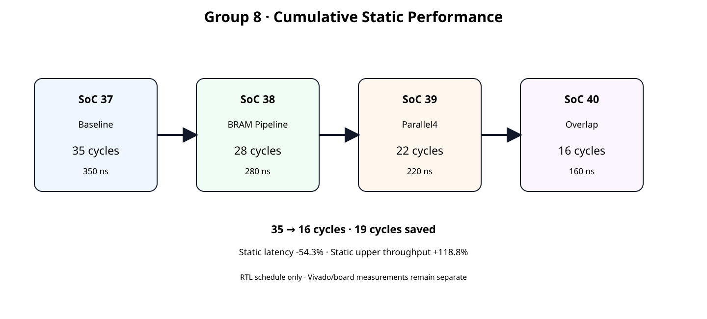
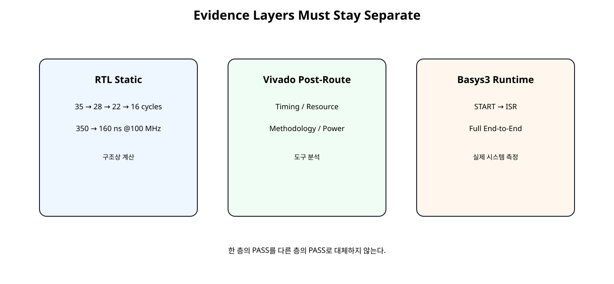

Group 8
이번 장의 목표

원본 보기 ↗
Group 8 전체 위치

원본 보기 ↗
Hardware Freeze
정적 성능 누적
| 단계 | 구조 변경 | Cycle | @100 MHz |
|---|---|---|---|
| SoC37 | Baseline | 35 | 350 ns |
| SoC38 | BRAM Read Pipeline | 28 | 280 ns |
| SoC39 | Parallel4 Requant | 22 | 220 ns |
| SoC40 | Data/Compute Overlap | 16 | 160 ns |
35 → 16 cycles
19 cycles saved
Baseline 대비 개선
| Metric | SoC37 | SoC40 |
|---|---|---|
| Static Latency | 350 ns | 160 ns |
| Baseline 대비 | 기준 | -54.3% |
| Upper jobs/s | 2.857 M | 6.250 M |
| Upper Throughput | 기준 | +118.8% |
모두 RTL Static Schedule 기준이며 실제 Basys3 성능이 아니다.
Evidence 3계층

원본 보기 ↗
왜 계층을 분리하는가
16 cycles가 맞아도 100 MHz Timing Closure가 실패할 수 있고, Timing이 PASS해도 Resource/Power Budget을 초과할 수 있다. Vivado Report가 좋아도 실제 CPU→IRQ→Result 경로가 예상보다 느릴 수 있다.
Sign-off Gate
원본 보기 ↗
Functional Gate
Timing Gate
AMD UG906 2026.1 기준 Timing Sign-off는 Placement/Route 이후 필수 확인 단계다. Post-Implementation Timing Summary를 실제 Sign-off 근거로 사용한다.
WNS / TNS
Setup Violation이 없는지 확인한다.
WHS / THS
Setup PASS만으로 Timing Sign-off를 완료하지 않는다.
Constraint 완전성
AMD UG949는 Timing 결과를 보기 전에 모든 Synchronous Endpoint가 올바르게 Constraint되었는지 확인하고 check_timing과 Timing Summary의 Unconstrained Paths를 확인하도록 안내한다.
Bus Skew
AMD UG906는 report_timing_summary가 Bus Skew Constraint를 포함하지 않는다고 명시한다. 해당 Constraint를 사용하는 경우 report_bus_skew를 별도로 확인한다.
Methodology Gate
report_methodology는 RTL, 합성 Netlist/Constraint, 구현 Timing 단계의 Methodology 문제를 검출한다. Critical Warning을 우선 해결한다.
DRC / CDC
Timing Slack이 양수라도 Clock/CDC/Constraint 문제가 있으면 실제 Hardware 안정성이 보장되지 않는다. CDC가 존재하면 report_cdc도 별도 검토한다.
Resource Gate
Source 코드의 Instance 개수 대신 실제 Implemented Utilization을 기록한다.
Power / Thermal Gate
Power는 Total/Dynamic/Static과 Junction Temperature를 확인하고, 사용자가 정의한 Power/Thermal Budget과 비교한다.
Power Activity
AMD UG907는 Voltage/Environment가 Static Power에, Activity/Voltage가 Dynamic Power에 큰 영향을 준다고 설명한다. Power 값과 함께 Activity Source, Ambient, Airflow, Voltage 조건을 기록한다.
Runtime Gate
AXI Timer / 반복측정
UART Print는 측정구간 밖에 두고, Warm-up 후 여러 Job을 반복하여 평균만이 아니라 min/max도 함께 기록한다.
Static Reference
SoC41 GROUP-8 STATIC PROGRESSION
clock = 100 MHz
SoC37 Baseline: 35 cycles, 350.0 ns, 2,857,142.857 upper jobs/s
change = Baseline
step latency reduction = 0.0%
cumulative latency reduction = 0.0%
cumulative upper-throughput gain = 0.0%
SoC38 BRAM Read Pipeline: 28 cycles, 280.0 ns, 3,571,428.571 upper jobs/s
change = Read bubble removal
step latency reduction = 20.0%
cumulative latency reduction = 20.0%
cumulative upper-throughput gain = 25.0%
SoC39 Parallel4 Requant: 22 cycles, 220.0 ns, 4,545,454.545 upper jobs/s
change = Spatial parallelism
step latency reduction = 21.4%
cumulative latency reduction = 37.1%
cumulative upper-throughput gain = 59.1%
SoC40 Data/Compute Overlap: 16 cycles, 160.0 ns, 6,250,000.000 upper jobs/s
change = Prefetch + overlap
step latency reduction = 27.3%
cumulative latency reduction = 54.3%
cumulative upper-throughput gain = 118.8%
GROUP-8 STATIC RESULT
35 -> 16 cycles
350.0 ns -> 160.0 ns @ 100 MHz
19 cycles saved
cumulative static latency reduction = 54.3%
cumulative static upper-throughput gain = 118.8%
IMPORTANT:
- These are RTL schedule values.
- WNS/TNS/WHS/THS are not measured here.
- LUT/FF/DSP/BRAM are not measured here.
- Power/thermal are not measured here.
- Basys3 START->ISR and end-to-end latency are not measured here.
SOC41 GROUP8 STATIC REFERENCE: PASS
Spreadsheet runtime warmup failed during python startup
Traceback (most recent call last):
File "/tmp/tmp.L2TH2Y5coc/artifact_tool_v2-2.8.22/artifact_tool/patches/warm_spreadsheet_runtime_on_startup.py", line 26, in warm_spreadsheet_runtime_on_startup
File "/tmp/tmp.L2TH2Y5coc/artifact_tool_v2-2.8.22/artifact_tool/spreadsheet_warmup.py", line 772, in warm_spreadsheet_runtime
File "/tmp/tmp.L2TH2Y5coc/artifact_tool_v2-2.8.22/artifact_tool/rpc/connection.py", line 37, in get_or_create_client
File "/tmp/tmp.L2TH2Y5coc/artifact_tool_v2-2.8.22/artifact_tool/rpc/daemon.py", line 124, in start_daemon
TimeoutError: Timed out waiting for artifact tool daemon socket. Set ARTIFACT_TOOL_RPC_DAEMON_STARTUP_TIMEOUT_S=<seconds> to increase the limit.
Sign-off JSON
{
"design": {
"chapter": "SoC41",
"device": "xc7a35tcpg236-1",
"board": "Basys3",
"target_clock_mhz": 100.0,
"vivado_version": null,
"vitis_version": null,
"bitstream_id": null
},
"functional": {
"rtl_regression_pass": null,
"job0_expected_pass": null,
"job1_expected_pass": null,
"descriptor_error_irq_pass": null,
"done_irq_w1c_pass": null,
"job_id_sequence_pass": null
},
"timing": {
"wns_ns": null,
"tns_ns": null,
"whs_ns": null,
"ths_ns": null,
"unconstrained_paths": null,
"pulse_width_violations": null,
"timing_critical_warnings": null
},
"methodology": {
"critical_warnings": null,
"drc_errors": null,
"cdc_critical": null
},
"resources": {
"lut_used": null,
"lut_available": null,
"ff_used": null,
"ff_available": null,
"bram_used": null,
"bram_available": null,
"dsp_used": null,
"dsp_available": null
},
"power": {
"activity_source": null,
"total_on_chip_w": null,
"dynamic_w": null,
"device_static_w": null,
"junction_temp_c": null,
"ambient_c": null,
"airflow_lfm": null,
"power_budget_w": null,
"junction_limit_c": null
},
"runtime": {
"measurement_method": null,
"repeat_count": null,
"start_to_isr_avg_us": null,
"full_e2e_avg_us": null,
"full_e2e_min_us": null,
"full_e2e_max_us": null,
"baseline_full_e2e_avg_us": null
}
}측정하지 않은 값은 null로 둔다.
자동 판정 원칙
값 있음 + 기준 위반 → FAIL
값 없음 → INCOMPLETE
도구 버전·Bitstream 식별 정보가 없으면 INCOMPLETE로 남긴다. 음수 자원·전력·실행시간과 NaN/Infinity는 FAIL로 처리한다. 종료 코드는 PASS 0, FAIL 1, INCOMPLETE 2이다.
INCOMPLETE의 의미
SoC41 SIGN-OFF EVALUATION
functional : INCOMPLETE
missing: rtl_regression_pass, job0_expected_pass, job1_expected_pass, descriptor_error_irq_pass, done_irq_w1c_pass, job_id_sequence_pass
timing : INCOMPLETE
missing: wns_ns, tns_ns, whs_ns, ths_ns, unconstrained_paths, pulse_width_violations, timing_critical_warnings
methodology : INCOMPLETE
missing: critical_warnings, drc_errors, cdc_critical
resources : INCOMPLETE
missing: lut_used, lut_available, ff_used, ff_available, bram_used, bram_available, dsp_used, dsp_available
power : INCOMPLETE
missing: activity_source, total_on_chip_w, dynamic_w, device_static_w, junction_temp_c, ambient_c, power_budget_w, junction_limit_c
runtime : INCOMPLETE
missing: measurement_method, repeat_count, start_to_isr_avg_us, full_e2e_avg_us, full_e2e_min_us, full_e2e_max_us
overall : INCOMPLETE
Spreadsheet runtime warmup failed during python startup
Traceback (most recent call last):
File "/tmp/tmp.L2TH2Y5coc/artifact_tool_v2-2.8.22/artifact_tool/patches/warm_spreadsheet_runtime_on_startup.py", line 26, in warm_spreadsheet_runtime_on_startup
File "/tmp/tmp.L2TH2Y5coc/artifact_tool_v2-2.8.22/artifact_tool/spreadsheet_warmup.py", line 772, in warm_spreadsheet_runtime
File "/tmp/tmp.L2TH2Y5coc/artifact_tool_v2-2.8.22/artifact_tool/rpc/connection.py", line 37, in get_or_create_client
File "/tmp/tmp.L2TH2Y5coc/artifact_tool_v2-2.8.22/artifact_tool/rpc/daemon.py", line 124, in start_daemon
TimeoutError: Timed out waiting for artifact tool daemon socket. Set ARTIFACT_TOOL_RPC_DAEMON_STARTUP_TIMEOUT_S=<seconds> to increase the limit.
Sign-off Evaluator
#!/usr/bin/env python3
import json
import math
import sys
from pathlib import Path
def missing(section: dict, keys: list[str]) -> list[str]:
return [
key for key in keys
if section.get(key) is None or (
isinstance(section.get(key), str)
and not section[key].strip()
)
]
def all_true(section: dict, keys: list[str]) -> bool:
return all(
section.get(key) is True
for key in keys
)
# (추가) bool·NaN·Infinity를 측정 숫자로 승인하지 않는다.
def finite_number(value) -> bool:
return type(value) in (int, float) and math.isfinite(value)
def main() -> int:
if len(sys.argv) != 2:
print(
"usage: python3 evaluate_soc41_signoff.py "
"data/soc41_signoff_input.json"
)
return 2
path = Path(sys.argv[1])
try:
data = json.loads(path.read_text(encoding="utf-8"))
except (OSError, ValueError) as exc:
print(f"Invalid input: {exc}\noverall : FAIL")
return 1
sections = ("design", "functional", "timing", "methodology",
"resources", "power", "runtime")
if not isinstance(data, dict) or any(
not isinstance(data.get(key), dict) for key in sections
):
print("Invalid input sections\noverall : FAIL")
return 1
results = {}
# (추가) 측정 결과를 실제 도구 버전·Bitstream에 대응시킨다.
design = data["design"]
dkeys = ["device", "board", "target_clock_mhz", "vivado_version",
"vitis_version", "bitstream_id"]
dm = missing(design, dkeys)
design_pass = (
finite_number(design.get("target_clock_mhz"))
and design["target_clock_mhz"] > 0
and all(isinstance(design.get(k), str) and design[k].strip()
for k in dkeys if k != "target_clock_mhz")
)
results["design"] = ("INCOMPLETE" if dm else
"PASS" if design_pass else "FAIL", dm)
functional = data["functional"]
fkeys = [
"rtl_regression_pass",
"job0_expected_pass",
"job1_expected_pass",
"descriptor_error_irq_pass",
"done_irq_w1c_pass",
"job_id_sequence_pass",
]
fm = missing(functional, fkeys)
if fm:
results["functional"] = (
"INCOMPLETE",
fm,
)
else:
results["functional"] = (
"PASS" if all_true(functional, fkeys) else "FAIL",
[],
)
timing = data["timing"]
tkeys = [
"wns_ns",
"tns_ns",
"whs_ns",
"ths_ns",
"unconstrained_paths",
"pulse_width_violations",
"timing_critical_warnings",
]
tm = missing(timing, tkeys)
if tm:
results["timing"] = (
"INCOMPLETE",
tm,
)
else:
timing_pass = (
all(finite_number(timing[k]) for k in tkeys)
and timing["wns_ns"] >= 0.0
and timing["tns_ns"] >= 0.0
and timing["whs_ns"] >= 0.0
and timing["ths_ns"] >= 0.0
and timing["unconstrained_paths"] == 0
and timing["pulse_width_violations"] == 0
and timing["timing_critical_warnings"] == 0
)
results["timing"] = (
"PASS" if timing_pass else "FAIL",
[],
)
methodology = data["methodology"]
mkeys = [
"critical_warnings",
"drc_errors",
"cdc_critical",
]
mm = missing(methodology, mkeys)
if mm:
results["methodology"] = (
"INCOMPLETE",
mm,
)
else:
method_pass = (
all(type(methodology[k]) is int for k in mkeys)
and methodology["critical_warnings"] == 0
and methodology["drc_errors"] == 0
and methodology["cdc_critical"] == 0
)
results["methodology"] = (
"PASS" if method_pass else "FAIL",
[],
)
resources = data["resources"]
pairs = [
("lut_used", "lut_available"),
("ff_used", "ff_available"),
("bram_used", "bram_available"),
("dsp_used", "dsp_available"),
]
rm = []
for used, available in pairs:
if resources.get(used) is None:
rm.append(used)
if resources.get(available) is None:
rm.append(available)
if rm:
results["resources"] = (
"INCOMPLETE",
rm,
)
else:
resource_pass = all(
finite_number(resources[used])
and finite_number(resources[available])
and 0 <= resources[used] <= resources[available]
and resources[available] > 0
for used, available in pairs
)
results["resources"] = (
"PASS" if resource_pass else "FAIL",
[],
)
power = data["power"]
pkeys = [
"activity_source",
"total_on_chip_w",
"dynamic_w",
"device_static_w",
"junction_temp_c",
"ambient_c",
"power_budget_w",
"junction_limit_c",
]
pm = missing(power, pkeys)
if pm:
results["power"] = (
"INCOMPLETE",
pm,
)
else:
power_pass = (
isinstance(power["activity_source"], str)
and all(finite_number(power[k]) for k in pkeys
if k != "activity_source")
and all(power[k] >= 0 for k in
("total_on_chip_w", "dynamic_w", "device_static_w"))
and power["power_budget_w"] > 0
and power["total_on_chip_w"]
<= power["power_budget_w"]
and power["junction_temp_c"]
<= power["junction_limit_c"]
)
results["power"] = (
"PASS" if power_pass else "FAIL",
[],
)
runtime = data["runtime"]
rkeys = [
"measurement_method",
"repeat_count",
"start_to_isr_avg_us",
"full_e2e_avg_us",
"full_e2e_min_us",
"full_e2e_max_us",
]
rtm = missing(runtime, rkeys)
if rtm:
results["runtime"] = (
"INCOMPLETE",
rtm,
)
else:
sane = (
isinstance(runtime["measurement_method"], str)
and type(runtime["repeat_count"]) is int
and runtime["repeat_count"] > 0
and all(finite_number(runtime[k]) and runtime[k] >= 0
for k in rkeys if k not in
("measurement_method", "repeat_count"))
and runtime["full_e2e_min_us"]
<= runtime["full_e2e_avg_us"]
<= runtime["full_e2e_max_us"]
)
results["runtime"] = (
"RECORDED" if sane else "FAIL",
[],
)
print("SoC41 SIGN-OFF EVALUATION")
for name, (status, missing_keys) in results.items():
print(
f"{name:12s}: {status}"
)
if missing_keys:
print(
" missing: "
+ ", ".join(missing_keys)
)
hard_gates = [
"design",
"functional",
"timing",
"methodology",
"resources",
"power",
]
if any(
results[key][0] == "FAIL"
for key in results
):
overall = "FAIL"
elif any(
results[key][0] == "INCOMPLETE"
for key in hard_gates
):
overall = "INCOMPLETE"
elif results["runtime"][0] == "INCOMPLETE":
overall = "INCOMPLETE"
elif results["runtime"][0] == "FAIL":
overall = "FAIL"
else:
overall = "PASS"
print(f"overall : {overall}")
# (변경) 미완료도 Shell/CI에서 성공으로 오인하지 않게 구분한다.
return {"PASS": 0, "FAIL": 1, "INCOMPLETE": 2}[overall]
if __name__ == "__main__":
raise SystemExit(main())
Full Vivado Collector
# SoC 41 · Group-8 full sign-off report collector
#
# Usage:
# open_project <your_project.xpr>
# open_run impl_1
# source collect_soc41_signoff_reports.tcl
#
# The script only reports the currently opened implemented design.
# It does not fabricate PASS/FAIL values.
set script_dir [file dirname [file normalize [info script]]]
set root_dir [file normalize [file join $script_dir ".."]]
set out_dir [file normalize [file join $root_dir "reports" "signoff"]]
file mkdir $out_dir
if {[llength [get_cells -quiet]] == 0} {
error "No implemented design is open. Run open_run impl_1 first."
}
# ------------------------------------------------------------
# 1. Timing / constraints
# ------------------------------------------------------------
check_timing \
-verbose \
-file [file join $out_dir "01_check_timing.rpt"]
report_timing_summary \
-delay_type min_max \
-report_unconstrained \
-max_paths 100 \
-file [file join $out_dir "02_timing_summary.rpt"]
# report_timing_summary does not cover bus-skew constraints.
# If the design has relevant bus-skew constraints, record them too.
if {[catch {
report_bus_skew \
-file [file join $out_dir "03_bus_skew.rpt"]
} bus_skew_error]} {
set fh [open [file join $out_dir "03_bus_skew_NOT_AVAILABLE.txt"] w]
puts $fh $bus_skew_error
close $fh
}
# ------------------------------------------------------------
# 2. Methodology / DRC / CDC
# ------------------------------------------------------------
report_methodology \
-file [file join $out_dir "04_methodology.rpt"]
report_drc \
-file [file join $out_dir "05_drc.rpt"]
if {[catch {
report_cdc \
-details \
-file [file join $out_dir "06_cdc.rpt"]
} cdc_error]} {
set fh [open [file join $out_dir "06_cdc_NOT_AVAILABLE.txt"] w]
puts $fh $cdc_error
close $fh
}
# ------------------------------------------------------------
# 3. Resource / clock / QoR
# ------------------------------------------------------------
report_utilization \
-hierarchical \
-file [file join $out_dir "07_utilization_hierarchical.rpt"]
report_clock_utilization \
-file [file join $out_dir "08_clock_utilization.rpt"]
report_design_analysis \
-setup \
-max_paths 100 \
-logic_level_distribution \
-file [file join $out_dir "09_design_analysis_setup.rpt"]
if {[catch {
report_qor_assessment \
-file [file join $out_dir "10_qor_assessment.rpt"]
} qor_error]} {
set fh [open [file join $out_dir "10_qor_assessment_NOT_AVAILABLE.txt"] w]
puts $fh $qor_error
close $fh
}
# ------------------------------------------------------------
# 4. Power / thermal
# ------------------------------------------------------------
# Before using this report for sign-off, record:
# - activity source
# - voltage
# - ambient
# - airflow / thermal environment
#
# Post-route power is the preferred implementation-stage estimate.
report_power \
-file [file join $out_dir "11_power_post_route.rpt"]
# ------------------------------------------------------------
# 5. Checkpoint
# ------------------------------------------------------------
write_checkpoint \
-force \
[file join $out_dir "soc41_signoff_snapshot.dcp"]
puts ""
puts "SoC 41 sign-off reports collected."
puts "Fill data/soc41_signoff_input.json from the actual reports/board run."
puts "Then run:"
puts " python3 scripts/evaluate_soc41_signoff.py data/soc41_signoff_input.json"
Timing Report Set
Methodology Report Set
Resource / QoR Report Set
Power Report Set
Post-Route report_power를 사용하고 Activity/Environment/Voltage 조건을 함께 보존한다.
Post-Route Snapshot
Sign-off 시점의 Implemented Design을 DCP로 저장하여 나중에 Report를 다시 열 수 있게 한다.
Sign-off Matrix
doc/GROUP8_SIGNOFF_MATRIX.md에서 Static Schedule과 실제 Functional/Timing/Resource/Power/Runtime Evidence를 한 문서에 정리한다.
실제 값 입력 절차
Overall PASS 조건
Function, Timing, Methodology/DRC/CDC, Resource, Power/Thermal Evidence가 모두 존재하고 기준을 만족하며 Runtime 측정도 기록되어야 Overall PASS로 올린다.
FAIL과 INCOMPLETE 구분
| Status | 의미 |
|---|---|
| PASS | 필요 Evidence가 있고 기준 만족 |
| FAIL | 실제 Evidence가 기준 위반 |
| INCOMPLETE | 아직 측정/입력하지 않음 |
Group 8 종료 조건
정적 16 cycles 달성만으로 종료하지 않는다. 실제 Sign-off Evidence까지 확보한 시점에 Group 8을 닫는다.
다음 단계 연결
Group 8 이후에는 검증된 Accelerator를 기준으로 NPU 구조 확장, 더 큰 Tensor/Tile 구조, DMA/Streaming 또는 장기 목표인 RISC-V CPU 결합 단계로 넘어갈 수 있다.
오류 점검
| 오류 | 문제 | 조치 |
|---|---|---|
| 16 cycles만 보고 PASS | Vivado/Board Evidence 없음 | Sign-off Gate 수행 |
| WNS만 확인 | Hold/Constraint 누락 | Timing Summary 전체 확인 |
| Unconstrained Path 존재 | Timing 분석 신뢰도 저하 | check_timing/XDC 수정 |
| Vectorless Power만 사용 | 실제 Activity와 차이 | Activity 조건 기록 |
| Missing 값을 0으로 입력 | 가짜 PASS 가능 | null 유지 |
| Static Latency와 E2E 혼동 | CPU/AXI/ISR 미포함 | Evidence 계층 분리 |
SoC 41 완료 체크리스트
- [ ] SoC40 Hardware를 byte-identical하게 동결한다.
- [ ] Group8 정적 35→16 cycles를 재현한다.
- [ ] Functional Regression Evidence를 기록한다.
- [ ] WNS/TNS/WHS/THS를 Post-Route에서 확인한다.
- [ ] Unconstrained Path와 Pulse Width를 확인한다.
- [ ] Methodology/DRC/CDC를 확인한다.
- [ ] LUT/FF/BRAM/DSP 실제 사용량을 기록한다.
- [ ] Power Activity/Environment/Budget을 기록한다.
- [ ] Basys3 START→ISR 및 Full E2E를 반복 측정한다.
- [ ] 미측정 값은 INCOMPLETE로 유지한다.
- [ ] JSON Evaluator와 Matrix 결과가 일치하는지 확인한다.
공식 문서 및 근거
| AMD UG906 · Verifying Timing Signoff · 2026.1 | Post-Implementation Timing Sign-off |
| AMD UG949 · Checking That Your Design is Properly Constrained · 2026.1 | check_timing / Unconstrained Path / Methodology |
| AMD UG949 · Running Report Methodology · 2026.1 | RTL/Netlist/Constraint/Timing Methodology Check |
| AMD UG907 · Vivado Power Analysis · 2026.1 | Post-Route Power 분석 |
| AMD UG907 · Setting Up Power Analysis · 2026.1 | Activity / Voltage / Environment 조건 |